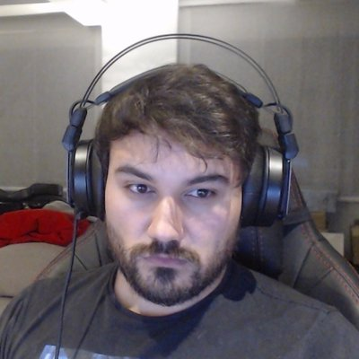

Esta es la pagina oficial del Campeonato Ornitológico de Andalucía aqui puedes encontrar toda la informacion importante sobre el concurso A continuacion se presentara el comite:
Comite Organizador del Campeonato
|
Miguel Ángel López Rodríguez, nació en Madrid (España) el día 14-06-1965, tiene el
cargo de Presidente desde el año 1990, su teléfono es el 666777888 y su correo es |
|

Alfredo Correa Correa, nació en Granada (España) el día 24-06-1983, tiene el cargo
de Secretario desde el año 2001, su teléfono es el 666555444 y su correo es |
|
Antonio Gómez Serrano, nació en Almería (España) el día 29-10-1979, tiene el
cargo de Tesorero desde este año, su teléfono es el 666111222 y su correo es |
CALENDARIO
Noviembre | |||||||
| Lunes | Martes | Miercoles | Jueves | Viernes | Sabado | Domingo | |
| 1 | 2 | 3 | |||||
| 4 | 5 | 6 | 7 | 8 | 9 | 10 Fin de entrega |
|
| 11 | 12 | 13 | 14 Presentacion de los ganadores |
15 | 16 | 17 | |
| 18 | 19 | 20 | 21 | 22 | 23 | 24 | |
| 25 | 26 Cibercamp |
27 ciudad AyC |
28 | 29 | 30 | ||